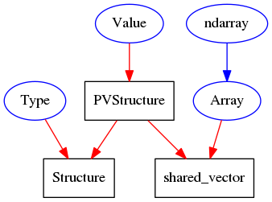

Internal API¶
This section is intended to help P4P devlopers. The API described is _not_ considered a public or stable API. It may change without notice.
Ownership¶
The ownership relations between the various objects in the C++ extensions are shown in the following diagrams.
- Python objects have blue blue oval
- C++ objects are black boxes
- red lines are shared_ptr<>
- grean lines are weak_ptr<>
- blue lines are python refs. (aka stored PyObject*)
- dashed lines are explicit breaks of a ref. loop
Type and Value¶
Client¶
![digraph client {
Context [shape=oval, color=blue];
ChannelProvider [shape=box];
Context -> ChannelProvider [color=red];
PyChannel [shape=oval, color=blue, label="Channel"];
Channel [shape=box];
PyChannel -> Channel [color=red];
ChannelReq [shape=box];
Channel -> ChannelReq [color=red];
ChannelReq -> PyChannel [color=green];
Channel -> ChannelProvider [color=red];
Operation [shape=oval, color=blue];
OpCallback [shape=oval, color=blue,label="callback"];
Operation -> OpCallback [color=blue];
ChannelGet [shape=box,label="ChannelGet/Put/RPC"];
Operation -> ChannelGet [color=red];
ChannelGet -> Channel [color=red];
GetReq [shape=box,label="ChannelGet/Put/RPCRequester"];
GetReq -> Operation [color=green];
ChannelGet -> GetReq [color=red];
Monitor [shape=box];
MonitorRequester [shape=box];
Subscription [shape=oval, color=blue];
handler [shape=oval, color=blue];
Subscription -> Monitor [color=red];
Monitor -> MonitorRequester [color=red];
Monitor -> Channel [color=red];
MonitorRequester -> Subscription [color=green];
Subscription -> handler [color=blue];
}](_images/graphviz-fd878274de230a726116f4af5022ef8122506de2.png)
Server¶
![digraph server {
PyServerProvider [shape=box];
provider [shape=oval, color=blue];
PyServerProvider -> provider [color=blue];
PyServerChannel [shape=box];
channel [shape=oval, color=blue];
ChannelRequester [shape=box];
PyServerChannel -> channel [color=blue];
PyServerChannel -> ChannelRequester [color=red];
PyServerChannel -> PyServerProvider [color=red];
PyServerRPC [shape=box];
ChannelRPCRequester [shape=box];
PyServerRPC -> ChannelRPCRequester [color=red];
PyServerRPC -> PyServerChannel [color=red];
RPCReply [shape=oval, color=blue];
channel [shape=oval, color=blue];
RPCReply -> PyServerRPC [color=red];
PyServerRPC -> RPCReply [color=green];
}](_images/graphviz-5d9e1dc0d5c364d044fd51263c3cb409818b6144.png)
API Reference¶
-
class
p4p._p4p.Array¶ Holder for a shared_array<> being shared w/ numpy
-
class
p4p._p4p.RPCReply¶
-
class
p4p._p4p.Type¶
-
class
p4p._p4p.Value(type, value=None)¶ Structured value container. Supports dict-list and object-list access
Parameters:
-
class
p4p._p4p.Channel¶ -
close()¶ Dispose of channel.
-
get(callback, request=None)¶ Initiate a new get() operation. The provided callback must be a callable object, which will be called with a single argument. Either a True (new data), False (no more data ever), None (Channel disconnected) or an Exception.
-
getName()¶ Channel name (aka PV name)
-
monitor(callback, request=None)¶ Initiate a new rpc() operation. The provided callback must be a callable object, which will be called with a single argument. Either None or an Exception.
-
put(callback, value, request=None)¶ Initiate a new put() operation. The provided callback must be a callable object, which will be called with a single argument. Either None or an Exception.
-
rpc(callback, value, request=None)¶ Initiate a new rpc() operation. The provided callback must be a callable object, which will be called with a single argument. Either None or an Exception.
-
-
class
p4p._p4p.Context¶ -
channel()¶ Return a Channel
-
close()¶ Close this Context
-
static
makeRequest("field(value)")¶ Parse pvRequest string
-
name¶ Provider name
-
static
providers() → ['name', ...]¶ Returns: A list of all currently registered provider names. A staticmethod.
-
static
set_debug(lvl)¶ Set PVA debug level
-
-
class
p4p._p4p.Server¶ -
conf()¶ Return actual Server configuration.
-
run()¶ Run server (blocking)
-
stop()¶ break from blocking run()
-
-
class
p4p._p4p.Subscription¶ -
close()¶ Cancel subscription.
-
done()¶ Has the last subscription update been received? Check after pop() returns None.
-
empty()¶ Would pop() return a value?
-
pop()¶ Pull an entry from the subscription queue. return None if empty
-
-
p4p._p4p.clearProviders()¶ Remove all Server Channel providers
-
p4p._p4p.installProvider("name", provider)¶ Install a new Server Channel provider
-
p4p._p4p.listRefs(zeros=False)¶ Snapshot c++ reference counter values. If zeros is False, then counts with zero value are omitted. :returns: {“name”,0}
-
p4p._p4p.pvaVersion()¶ Returns: tuple of version number components for PVData
-
p4p._p4p.pvdVersion()¶ Returns: tuple of version number components for PVData
-
p4p._p4p.removeProvider("name")¶ Remove a previously added Server Channel provider